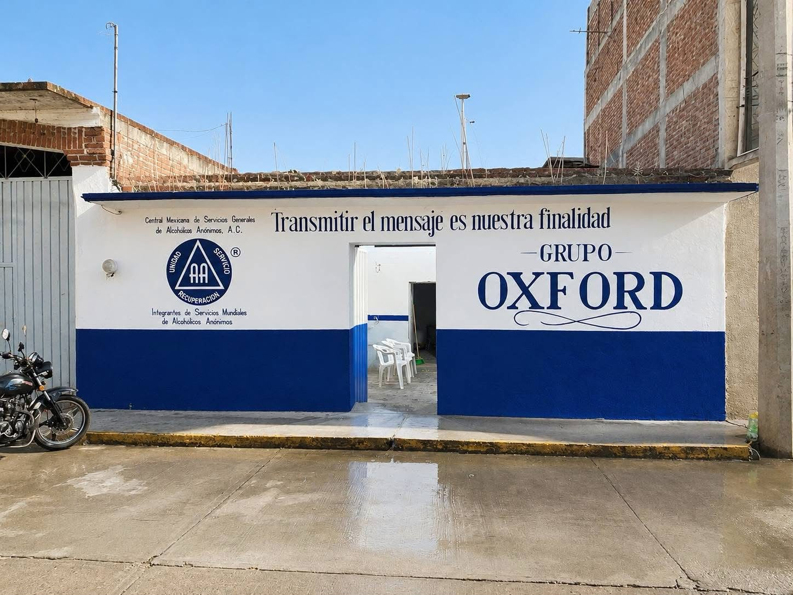

ALCOHÓLICOS ANÓNIMOS
Transmitir el mensaje es nuestra finalidad.
Compañeros Activos
Servicios Activos
Reuniones Semanales
Días Compartidos de Sobriedad
Cargando contenido...

Fundado el 22 de mayo de 2026
NUESTRA CASAEl Grupo Oxford abrió sus puertas con un propósito claro: transmitir el mensaje de recuperación a todo aquel que aún sufre por el alcoholismo.
Inspirados en los principios de Alcohólicos Anónimos, buscamos ofrecer un espacio de unidad, servicio y recuperación donde cada persona encuentre esperanza, compañerismo y una nueva forma de vivir.
“Transmitir el mensaje es nuestra finalidad”
Material de estudio y crecimiento espiritual.
Fundamentos de la recuperación.
Guía práctica para el cambio.
Herramientas para mantenerse sobrio.
Información esencial para miembros y familiares.
Calcula tu progreso.
Bienestar y nutrición.
10 junio 2026
28 junio 2026
31 de julio, 1 y 2 de agosto de 2026
23, 24 y 25 de octubre de 2026
Agosto 2026
Nace Alcohólicos Anónimos.
Fundación del Grupo Oxford.